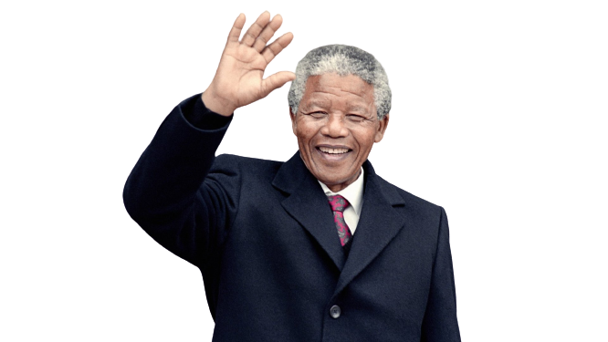
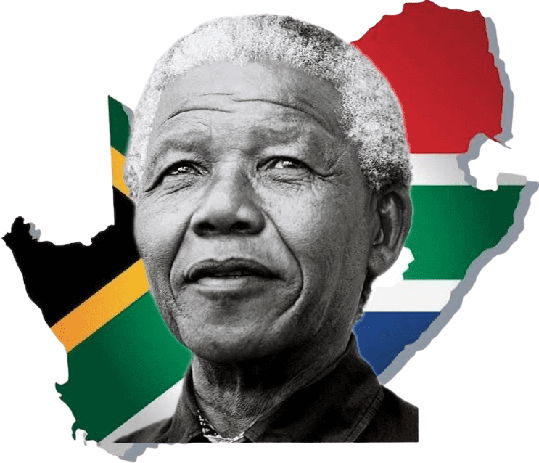
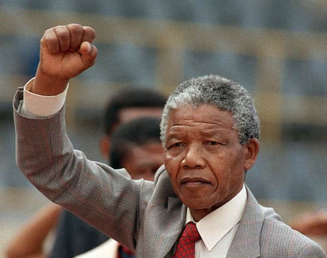
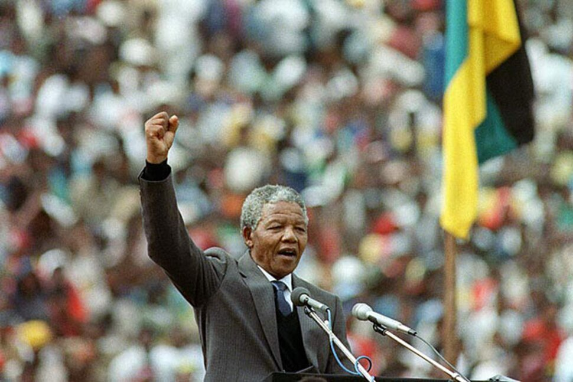
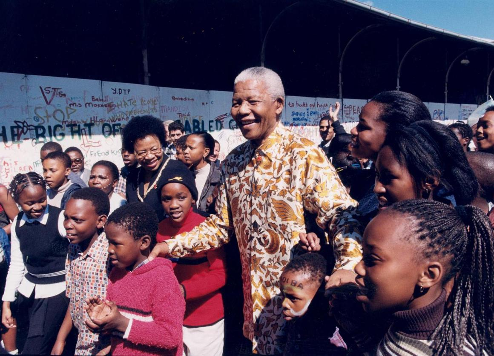
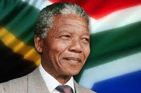

Nelson Mandela

"For to be free is not merely to cast off one's chains, but to live in a way that respects and enhances the freedom of others."
BIOGRAPHY

Nelson Mandela was a South African anti-apartheid revolutionary, politician, and philanthropist who served as the President of South Africa from 1994 to 1999. He is widely regarded as one of the most influential and inspirational leaders of the 20th century.
Early Life

Mandela was born on July 18, 1918, in Mvezo, a small village in the Eastern Cape province of South Africa. His father was a local chief, and Mandela was educated at a local missionary school before attending the University of Fort Hare, where he studied law.
Anti-Apartheid Activism

In 1942, Mandela moved to Johannesburg and joined the African National Congress (ANC), a political party that aimed to end the apartheid system of racial segregation and discrimination. He quickly rose through the ranks of the ANC and became one of its most prominent leaders.
In 1962, Mandela was arrested and sentenced to life imprisonment for his role in the ANC's armed struggle against apartheid. He spent the next 27 years in prison, during which time he became a symbol of resistance and an international icon for human rights.
Presidency and Achievements

Mandela was released from prison in 1990, following international pressure and widespread protests against apartheid. After his release, he worked tirelessly to negotiate an end to apartheid and to build a democratic, multiracial South Africa.
In 1994, Mandela became the first black president of South Africa, leading the country through a period of significant social and political change. He is credited with helping to heal the divisions of apartheid and promoting reconciliation between South Africa's different ethnic and racial groups.
Philanthropy and Humanitarian Work

Mandela retired from politics in 1999 but remained active in public life, focusing on philanthropy and humanitarian work through the Nelson Mandela Foundation. He received numerous awards and honors throughout his life, including the Nobel Peace Prize in 1993.
Legacy

Mandela died on December 5, 2013, at the age of 95, leaving behind a legacy of courage, compassion, and unwavering dedication to the cause of justice and human rights. His life and achievements continue to inspire people around the world, and his legacy serves as a reminder of the power of leadership, forgiveness, and reconciliation.
ACHIEVEMENTS
Nelson Mandela's Great and Famous Achievements
- Leading the Anti-Apartheid Movement: Mandela was a prominent leader in the fight against apartheid, a system of institutionalized racial segregation and discrimination that existed in South Africa from 1948 to 1994. He played a key role in organizing boycotts, strikes, and civil disobedience campaigns against the apartheid government.
- Imprisonment and Release: Mandela was imprisoned for 27 years for his political activities. However, his imprisonment only strengthened his resolve to fight for freedom and equality in South Africa. He was finally released from prison on February 11, 1990, after years of international pressure and campaigns calling for his release.
- Presidency of South Africa: In 1994, Mandela was elected as the first black President of South Africa in the country's first democratic election. His presidency was marked by a commitment to reconciliation, the promotion of human rights, and the dismantling of the legacy of apartheid.
- Truth and Reconciliation Commission: Mandela established the Truth and Reconciliation Commission, which investigated human rights abuses committed during the apartheid era. The Commission provided a platform for victims and perpetrators of human rights abuses to tell their stories and seek forgiveness.
- International Recognition: Mandela received numerous awards and honors for his contributions to the fight against apartheid and for his leadership in promoting human rights and social justice. These include the Nobel Peace Prize in 1993 and the Presidential Medal of Freedom in 2002.